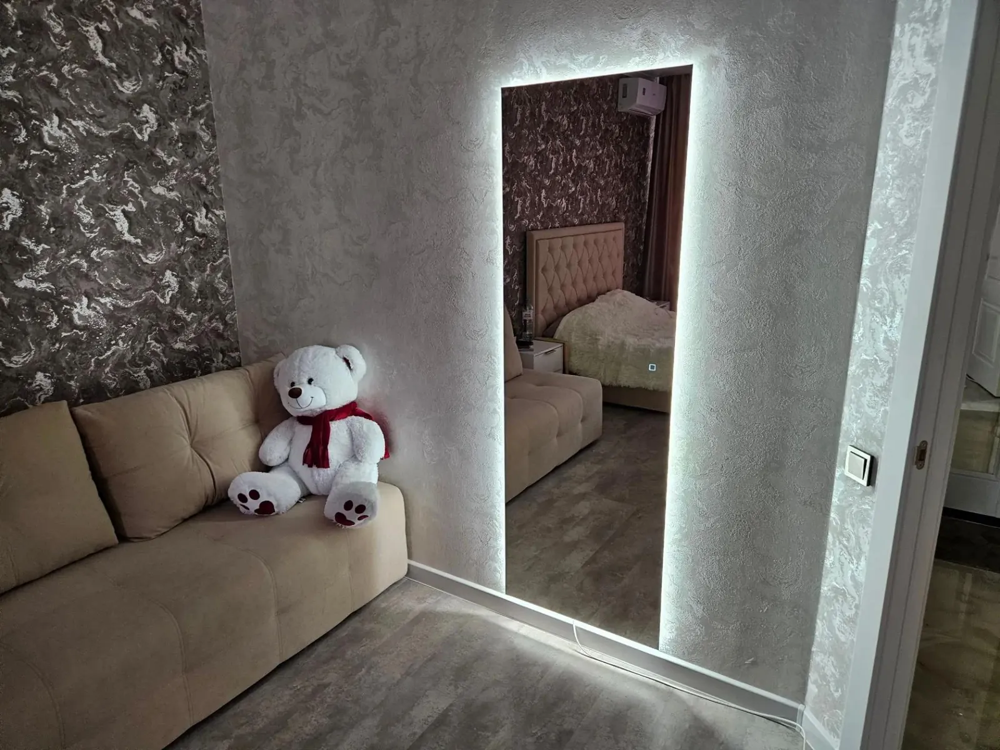
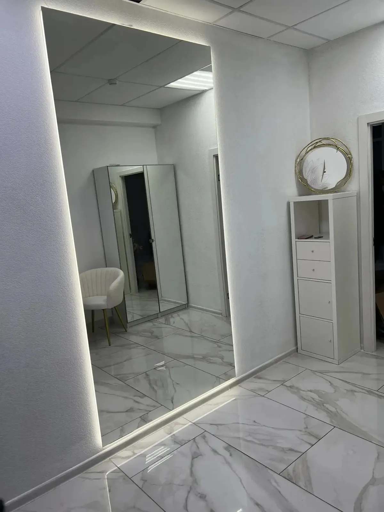
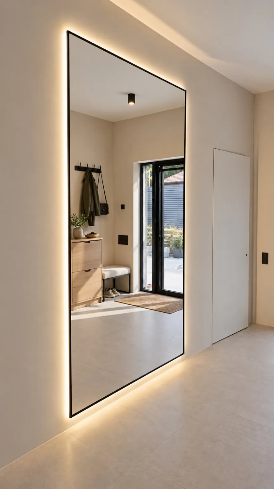
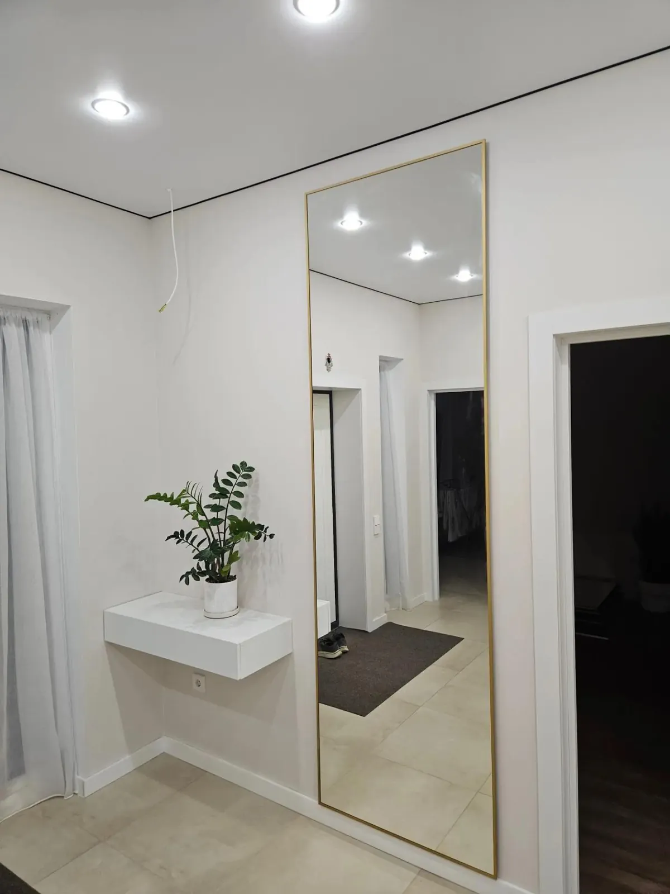

Для гостиной
Подсветка по контуру делает зеркало световым акцентом комнаты.
В полный рост · по вашим размерам
Высоту и ширину подбираем под свободное место на стене: от узкого проёма до зеркальной стены. Свет, раму и управление выбираете сами.
Размеры от 40 до 320 см. Принимаем заказы в Мурино, Буграх, Новом Девяткино и Санкт-Петербурге.

Фотографии и визуализации

Подсветка по контуру делает зеркало световым акцентом комнаты.

Тонкая чёрная рама и мягкий тёплый свет по периметру.

Золотая рама подходит для светлых и классических интерьеров.
Измерьте свободный участок стены. Зеркало изготовим по вашим размерам.
Для прямоугольных зеркал доступны чёрная, белая и золотая алюминиевые рамы, а также вариант без рамы.
Подсветка по периметру, цвет света на выбор: тёплый, нейтральный или холодный.
Способ монтажа согласуем с учётом стены и расположения питания.
Итог зависит от размеров, формы, обработки кромки, подсветки, управления и выбранных услуг. Укажите свою комплектацию в калькуляторе и увидите итоговую стоимость. Детали заказа и условия доставки подтвердим при согласовании.
В калькуляторе доступны размеры от 40 до 320 см. Если нужен нестандартный проём или составное зеркало, напишите нам, уточним возможность.
Да. Рама не обязательна: выберите вариант без рамы и тип обработки кромки.
Используем крепёж с зазором под светодиодную ленту и блок питания. Способ монтажа согласуем с учётом стены.
Да, доставку и установку можно включить при расчёте. Детали согласуем до изготовления.
Начните с размеров. Итоговую стоимость покажет калькулятор.